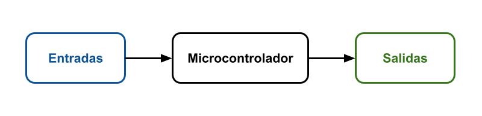
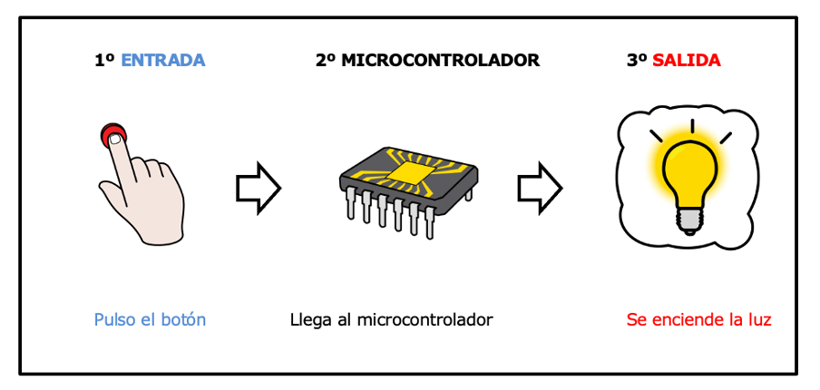

Hasta ahora hemos visto los componentes que lleva nuestra placa, qué es un microcontrolador y su importancia en el funcionamiento de la placa.
Hasta ahora hemos visto los componentes que lleva nuestra placa, qué es un microcontrolador y su importancia en el funcionamiento de la placa.
Nos queda ver cómo se relaciona el microcontrolador con los demás componentes (entradas y salidas). Esto es fundamental para saber cómo los robots se relacionan con su entorno: cómo reciben esos estímulos externos, los procesan y dan determinadas respuestas. ¡Y es algo muy importante a la hora de programarlos!
1. Recuerda: ¿Cómo crees que sienten los robots?
Recuerda que en el apartado "2. Activamos nuestros circuitos" realizaste un ejercicio en el que imaginaste que pasaba cuando alguien te da un pellizco.
Lo que ocurre nos puede ser de utilidad para entender lo que ahora vamos a ver, así que repasa mentalmente qué es lo que hicimos en ese ejercicio.
2. El esquema de funcionamiento de nuestra placa
Esquema

- Entradas: proporcionan información al microcontrolador, son los sensores.
- Microcontrolador: lee la información de la entrada, la procesa y la envía a la salida.
- Salidas: dan distintas respuestas en forma de sonido, luz, movimiento y calor. Son los actuadores.
Lectura
Recuerda que en el apartado anterior hemos visto qué es un microcontrolador. Los microcontroladores funcionan con un esquema de entradas, procesamiento, salidas.
- Las entradas son los sensores y proporcionan información al microcontrolador. Ejemplos de entradas son: pulsadores, sensor de luz, temperatura, acelerómetro.
- El microcontrolador almacena en su memoria el programa que hemos realizado. Con el programa el microcontrolador lee la información de las entradas, la procesa y envía una actuación a las salidas.
- Las salidas dan distintas respuestas en forma de sonido, luz, movimiento. Ejemplos de salidas son: leds, zumbador, motores.
Ejemplo del proceso: En un sistema formado por un pulsador que acciona un LED, el microcontrolador lee el estado de un pulsador (entrada), si está presionado enciende un LED (salida) si no lo apaga.
Video
Apoyo visual
Esquema sobre la información de entradas y salidas:

En el ejemplo de un pulsador (entrada) y un LED (salida), serían los siguientes pasos:

3. Explica el esquema
En pareja, explica a tu compañero o compañera el esquema de la imagen y que luego él te lo explique a ti.
Una vez que lo hayáis puesto en común, escribe en tu cuaderno la explicación del esquema con tus propias palabras.

4. Clasifica en entradas, procesamiento y salidas
5. La función de los sensores y actuadores
Comprueba que sabes cuál es la función de un sensor y de un actuador.
Opción A: Recuerda la función
Opción B: Explicamos la función
Explica de forma resumida y con tus propias palabras cuál es la función de un sensor y de un actuador.
6. Las entradas y las salidas
Comprueba que sabes identificar cuál es la entrada y cuál es la salida.
Opción A: Identifica la entrada y la salida
Opción B: En tu vida cotidiana
Piensa en varios ejemplos reales de la vida cotidiana donde tengas un sistema con una entrada, procesador, salida e identifica cuál es cada parte.
Un ejemplo son las luces que se encienden automáticamente al hacerse de noche. El sensor de luz es la entrada y la luz LED la salida.
7. Clasifica los componentes de la placa
En los siguientes ejercicios clasifica los componentes de la placa según la función que realizan:
- Entradas: sensores, proporcionan información
- Salidas: actuadores realizan una acción
- Procesador: procesa la información
- Conectividad: permiten conectarse con otros componentes
- Alimentación: permiten alimentar la placa
7.1. Clasifica los componentes de la cara frontal
7.2. Clasifica los componentes de la cara trasera
Clavis dice Repasa lo aprendido
Una buena estrategia para saber si avanzamos es hacernos preguntas de lo que vamos aprendiendo. Aquí te propongo que te pares un momento y respondas a las siguientes preguntas para saber cuánto dominas lo que acabamos de aprender sobre el proceso Entrada→ Procesador→ Salida:
- ¿Entiendo el proceso: Entrada → Procesador → Salida? ¿Sería capaz de explicarlo?
- ¿Conozco la diferencia entre la función de un sensor y de un actuador?
- ¿Soy capaz de poner ejemplos de componentes de entrada?
- ¿Soy capaz de poner ejemplos de componentes de salida?
- ¿Soy capaz de clasificar los componentes de la placa en entradas y salidas?
- Sé clasificar los componentes de la placa en sensores y actuadores.
- Sé identificar cuáles son los componentes que permiten la conectividad de la placa con otros aparatos o dispositivos.
- Sé identificar cuáles son los componentes que permiten alimentar la placa.